7 Supplementary Audits and Reproducibility
This supplement collects the load-bearing software audits and governance surfaces kept out of the main argument, grouped so readers can distinguish model behavior from manuscript accountability. It opens with the symbol and variable glossary (sec. 7.1). The finite engine audits follow: the quantum and contextuality engines (sec. 7.2), the seeded criticality signatures (sec. 7.3), and the compassion policy-scope proxy (sec. 7.4). The source-role ledger then explains how scholarship is allowed to support vocabulary without raising evidence ceilings (sec. 7.5). The practice-interface material follows, with bounded model interventions (sec. 7.6) and an optional contemplative-inquiry reading scaffold (sec. 7.7). The final section, sec. 7.8, gathers reproducibility commands, claim and evidence gates, figure source maps, release and review-response ledgers, visual audits, dashboard checks, and supplemental limitations in one meta-manuscript record.
7.1 Symbol and Variable Glossary
This glossary is the single structured home for every symbol that appears in the equation registry and in the displayed surrogate equations of sec. 3.1. Each row gives the symbol, its natural-language name, and a short description of what it denotes in the finite software surrogate. Where the source paper and the active-inference literature reuse the same letter for two different quantities, the disambiguation note records which reading this project uses. The glossary describes notation only; it does not assert any empirical, neural, clinical, or ontological reading of the quantities it names.
7.1.1 Boundary screen and quantum reference frames
These symbols appear in the QRF sectorisation and indistinguishability surrogates (eq. 1, eq. 2, eq. 3).
| Symbol | Name | Description |
|---|---|---|
| \(B\) | Boundary screen | The finite set of boundary channels (the six bits) through which an agent and its environment interact; the substrate the agent predicts across. |
| \(S_Q\) | Sector set | The set of QRF sector labels that a sectorisation can assign to boundary states. |
| \(Q\) | Sectorisation map (QRF) | A quantum reference frame realised as a map \(Q: B \rightarrow S_Q\) from boundary states to sector labels (eq. 1). |
| \(Q_i,\ Q_j\) | Sector labels | Two specific sectors whose observation distributions are compared for indistinguishability (eq. 3). |
| \(o\) | Observation | A boundary readout, i.e. a bit pattern emitted by the screen. |
| \(\bar{o}\) | Coarse-grained observation | A marginal or aggregated observation used in the frame-relative likelihood (eq. 2). |
| \(M\) | Generative model | The agent’s full model over boundary dynamics. |
| \(M_Q\) | Frame-restricted model | The generative model read under a particular sectorisation \(Q\) (eq. 2). |
| \(P(\cdot)\) | Probability | A finite probability distribution over boundary outcomes. |
7.1.2 Separation prior, free energy, and Bayesian model reduction
These symbols appear in the separation-prior and free-energy surrogates (eq. 4, equation 6, and equation 11 of the registry).
| Symbol | Name | Description |
|---|---|---|
| \(\sigma\) | Separation prior | A structural precision and map \(\sigma: Q \rightarrow Q_{\sigma}\) restricting admissible sectorisations to a subspace (eq. 4). Disambiguation: the criticality branching ratio is conventionally also written \(\sigma\); this project reports it as “branching ratio” to keep the separation prior unambiguous. |
| \(Q_{\sigma}\) | Admissible subspace | The restricted set of sectorisations favoured by the separation prior (eq. 4). |
| \(F\) | Variational free energy | The quantity the agent minimises; it decomposes as complexity minus accuracy (registry equation 6). |
| \(\Delta F\) | Free-energy change | The free energy of the reduced model minus the free energy of the full model, i.e. the change when the separation prior is pruned. |
| complexity | Complexity term | The Kullback-Leibler divergence of the posterior from the prior over model parameters (registry equation 11). |
| accuracy | Accuracy term | The expected log-likelihood of observations under the model. |
7.1.3 Active-inference generative arrays (pymdp)
The profile-specific generative models are built from four arrays. The manuscript names them in words; the conventional single letters are given here for cross-reference only.
| Array (conventional letter) | Name | Description |
|---|---|---|
| likelihood array (\(A\)) | Observation likelihood | Maps hidden states to observation probabilities. |
| transition array (\(B\)) | State transition | Maps a state and selected action to the next state. Disambiguation: \(B\) here is the pymdp transition array, distinct from the boundary screen \(B\) above; the manuscript uses “transition array” in prose. |
| preference array (\(C\)) | Preferences | Encodes the agent’s preferred observations as log-preferences. |
| prior array (\(D\)) | Initial-state prior | The prior over hidden states at the first step. |
7.1.4 Seeded criticality signatures
These quantities are computed from seeded boundary-channel activity series (see sec. 7.3).
| Symbol | Name | Description |
|---|---|---|
| branching ratio | Branching ratio | Estimated descendants per ancestor over a boundary-channel activity series. |
| criticality index | Criticality index | The absolute distance of the measured branching ratio from one, \(\lvert\text{branching ratio} - 1\rvert\). |
| avalanche size | Avalanche size | The length of a maximal supra-threshold run of activity. |
| LLR | Power-law-versus-exponential LLR | A finite log-likelihood-ratio diagnostic comparing power-law and exponential fits to the avalanche-size distribution. |
7.1.5 Finite quantum-information quantities
These appear in the finite quantum and contextuality engines (sec. 7.2).
| Symbol | Name | Description |
|---|---|---|
| \(\rho\) | Density matrix | A finite quantum state on a small Hilbert space. |
| \(S(\rho)\) | Von Neumann entropy | \(-\mathrm{Tr}(\rho \log \rho)\); the reduced entropy quantifies entanglement in the two-qubit sweep. |
| CHSH value | Bell witness | A correlation sum tested against the local bound of two and the Tsirelson bound of \(2\sqrt{2}\). |
| negativity | Entanglement witness | A separability witness derived from the positive-partial-transpose criterion. |
| \(H_U, H_A, H_B, H_{AB}\) | Partition entropies | Joint and marginal Shannon entropies of boundary partitions used in the registry’s first equation. |
Every symbol above denotes a quantity inside a finite, replayable software surrogate. None of these symbols, individually or in combination, is a measurement of a physical, neural, or contemplative quantity, and the evidence ceilings in sec. 7.8.2 govern how any of them may be read.
7.2 Supplemental Finite Quantum and Contextuality Audits
The technical quantum and contextuality panels are supplemental
because each one strengthens a finite software surrogate without
changing the manuscript’s evidence class. The generated entropy audit
records 33 entanglement-grid rows and 825
basis-invariance rows, while the trajectory-convergence audit reaches
2048 sampled trajectories at its largest convergence point.
They are source-mapped, schema-validated, and caption-audited, but they
do not instantiate a physical qFEP, measure a real observer boundary,
provide human data, or establish contemplative efficacy.
The internal-cut audit in fig. 16 generalises the no-self-evidence result from the single agent/environment boundary to arbitrary internal boundaries, following Section 3.3. A Bell pair on the agent and an ancilla is tensored with an environment pure state, so the agent’s accessible reduced state is invariant while the environment’s internal-cut entropy differs between a separable and an entangled environment. For every environment bipartition the accessible marginal drift stays near zero, so the agent cannot adjudicate the internal cut from its own side, while a two-sided oracle that is given the full joint state recovers the differing entropy. This is the resolving-power control: the quantity is genuinely non-trivial, yet remains inaccessible from one side. The audit is a finite pure-state linear-algebra computation, not a physical or observer-boundary measurement.
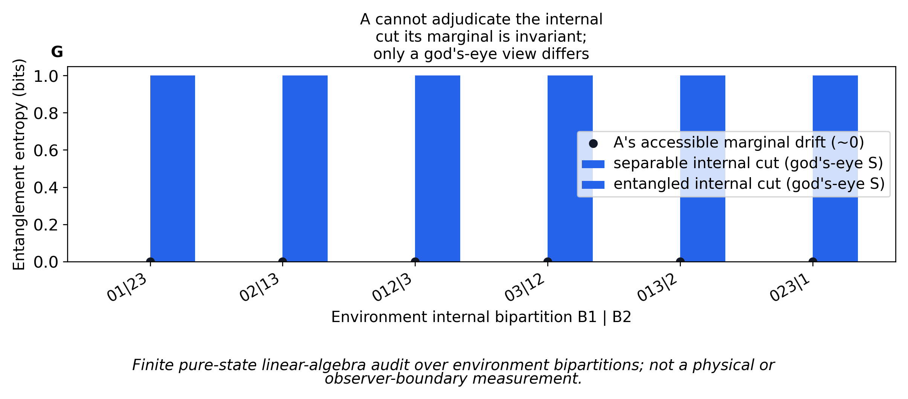
The Markov-blanket discovery audit in fig. 17 gives the no-self-evidence thesis a classical statistical form to complement the quantum internal-cut result. A Markov blanket is a conditional-independence structure: the internal variables are independent of the external ones given the blanket (Kirchhoff et al. 2018; Hipolito et al. 2021). For a multivariate Gaussian that structure lives exactly in the zero pattern of the precision (inverse-covariance) matrix, whereas the covariance an interior observer can passively measure is generically dense even when the precision is sparse. Over a fixed six-variable precision matrix with a planted internal/blanket/external partition, reading the precision support recovers the blanket exactly, and so does a swept threshold on partial correlations, so the demonstration is a correctness statement about precision versus covariance rather than a method beating a strawman. For this confounded instance no threshold on the marginal correlation matrix recovers the same blanket, because a weak true internal-blanket correlation is masked by a stronger induced internal-external one. That per-instance result is not over-generalised: a perturbation ensemble makes the claim distributional and honest. Across structurally-similar positive-definite perturbations of the planted weights, the precision support recovers the blanket in every instance, while the marginal-correlation threshold recovers it in only a minority (about a third of the sampled instances) and fails in the majority. The boundary is therefore reliably visible in conditional independence but only contingently in the marginal. Three further controls guard the claim: a fully-coupled precision matrix yields no nontrivial separation, an epsilon internal-external coupling breaks the exact conditional independence so the detector no longer reports a clean blanket, and the ensemble’s precision-recovery fraction must strictly exceed its marginal-recovery fraction. The audit is a finite deterministic linear-algebra computation, not a neural, developmental, or empirical claim about any real system’s boundary.
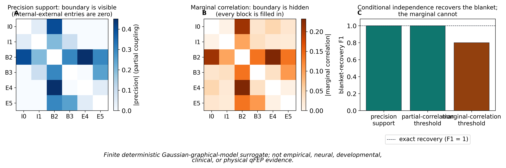
The interaction-information audit sharpens the no-self-evidence statement to its extreme case. Over a categorical joint of internal, blanket, and external variables the interaction information, the conditional minus the marginal mutual information (McGill 1954; Cover and Thomas 2006), separates a synergistic boundary from a redundant one. For a deterministic boundary in which the blanket is the parity of internal and external, the marginal mutual information the interior can passively observe is exactly zero, yet conditioning on the blanket reveals a full bit of dependence, so the interaction information is strongly positive. A redundant common-cause screen has the opposite sign, because the blanket renders internal and external conditionally independent, and an independent null sits at zero. The sign of the interaction information therefore flips between regimes that are indistinguishable to a marginal-only reading, a finite and exact echo of the thesis that the boundary cannot be evidenced from inside. The audit is a finite deterministic Shannon-information computation, not a neural, developmental, or empirical claim.
The classical data-processing audit states the boundary’s informational closure as the complement of the quantum data-processing engine. Modelling the boundary as a Markov chain from external world to blanket to interior, the Shannon data-processing inequality bounds the interior’s information about the external world by the blanket’s, with equality if and only if the interior’s read-out of the blanket is a sufficient statistic (Cover and Thomas 2006). A sufficient (lossless) read-out saturates the bound, a lossy state-merging read-out strictly loses information, and a constant read-out reaches zero; saturation versus strict loss is the discriminating control, measured from the joint distribution. The interior can therefore never know the external world better than the blanket lets it. The audit is a finite deterministic information-theoretic computation, not a neural, developmental, or empirical claim.
The contextuality-suppression audit operationalizes the Section 6.1 claim that the separation prior suppresses the inherent contextuality of the boundary (Kochen and Specker 1967). The parity-obstruction scenario has no global section, so an unconstrained agent that probes its incompatible contexts exhibits a positive linear-programming residual. A separation-constrained agent that commits to a single fixed sectorisation only ever measures within one context and never collects the obstructing data, so its observed sub-model is feasible and the contextuality is suppressed. The discriminating negative control is the noncontextual scenario, where the suppression delta is zero because there is nothing to suppress. The audit is a finite linear-programming obstruction comparison, not a claim that physical boundaries are contextual or that any agent realized emptiness.
The separability sweep in fig. 18 records reduced von Neumann entropy, mutual information, CHSH strength, contextual-fraction proxy, and Landauer-scaled lower-bound values for a finite two-qubit family. The product endpoint is the separable control and the Bell endpoint approaches one bit of reduced entropy and the Tsirelson CHSH value.
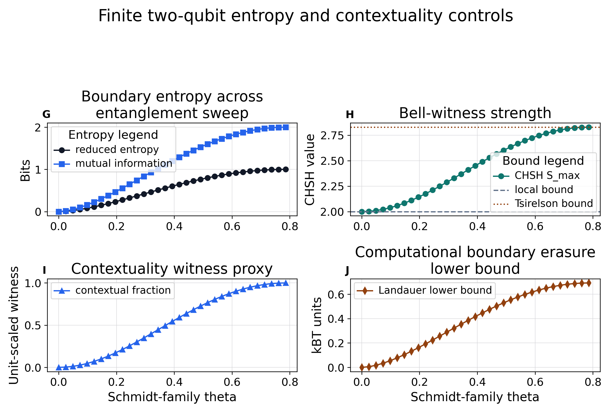
The mixed-state entanglement audit in fig. 19 extends the entropy check beyond a pure Schmidt curve. Separable controls remain zero-negativity, Bell controls are positive, Werner-family rows cross the PPT threshold, and invalid density matrices are rejected before witness values become interpretable.
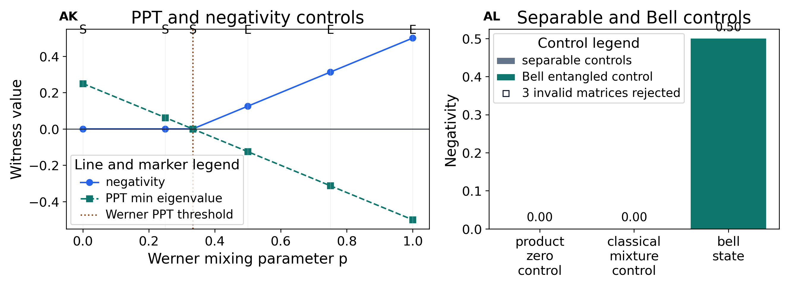
The multipartite and higher-dimensional witness suite extends the same negativity and PPT discipline beyond two qubits. Independent fixtures construct Greenberger-Horne-Zeilinger (GHZ) states (Greenberger et al. 1989) on two, three, and four qubits, a three-qubit W state, and a maximally entangled qutrit pair, then evaluate the negativity witness on every single-subsystem-versus-rest bipartition. The entangled fixtures are detected on every cut, with GHZ negativity at one half and the qutrit pair at one, while the explicit false-positive controls, separable product states on the same qubit and qutrit registers, are not detected on any cut. The suite is a finite linear-algebra witness over fixed states recorded in the multipartite witness suite audit artifact; it is not a genuine-multipartite-entanglement certificate and is not empirical, neural, clinical, or physical qFEP evidence.
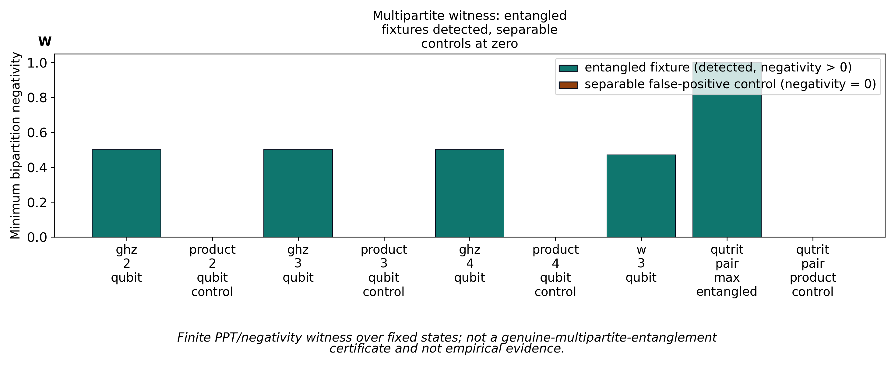
The tensor-network benchmark decomposes each toy boundary-screen state into a matrix product state by sequential singular-value decomposition (Eisert et al. 2010). The exact decomposition must reconstruct the state (the positive control), the maximum bond dimension records tensor-network tractability beyond exact state-vector enumeration (GHZ and W stay at bond two, products at one, and the GHZ bond stays two as the screen grows), and a bond-one truncation is the discriminating control pair: it loses fidelity on the entangled states but is lossless on the product state. This is a finite exact-MPS benchmark over toy sizes, not a large-scale many-body simulation and not empirical evidence.
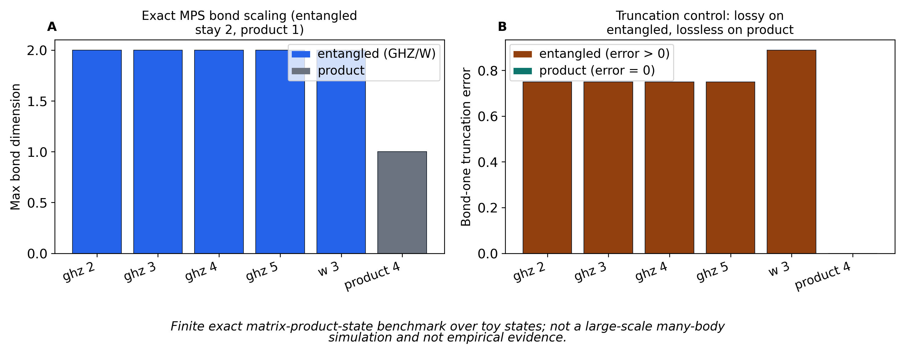
The collision-model surrogate relaxes a system qubit toward a fixed ancilla state through repeated partial-SWAP interactions with fresh ancillas, tracing out the ancilla each step. Coupled collisions drive the system trace distance toward zero while the zero-coupling collision is the discriminating control that leaves the system unchanged; every step stays trace-preserving and positive. It is a finite deterministic relaxation surrogate, not a physical heat bath or a thermodynamic measurement, and not empirical evidence.
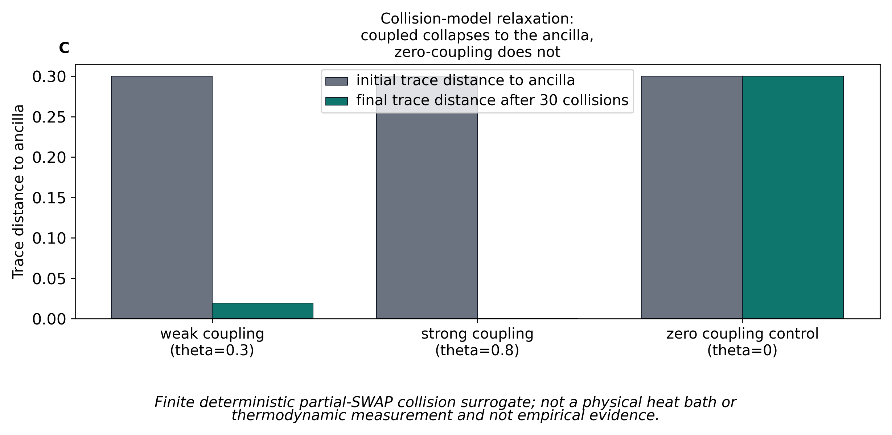
The data-processing monotonicity surrogate in fig. 23 operationalizes the opacification and Bayesian-model-reduction theme of Sections 5.3 and 6.1 as the irreversible loss of distinguishability at a coarse-grained boundary. The Lindblad-Uhlmann data-processing inequality states that a completely-positive trace-preserving channel can only reduce the trace distance and quantum relative entropy between two states (Lindblad 1976; Nielsen and Chuang 2010); over a finite family of qubit state pairs and the phase-damping, amplitude-damping, and depolarizing channels, every after-channel distance lies on or below its before value, so once the environment record is averaged out the interior cannot recover what was forgotten. Two discriminating controls give the audit teeth rather than leaving the inequality true by construction. First, the transpose map is positive and trace-preserving yet its Choi matrix has a minimum eigenvalue of minus one, so it is not completely positive; this control fires and shows that restricting to physical channels is a requirement, not a convenience. Second, a selective record-keeping post-selection, a non-trace-preserving filter chosen as the orthogonaliser, raises the trace distance toward one; this control fires and shows that the irreversibility belongs specifically to the record-discarding average and not to the interaction itself, so keeping the record can sharpen rather than blur. The audit is a finite qubit-channel linear-algebra computation, not a physical qFEP, neural, clinical, or contemplative claim.
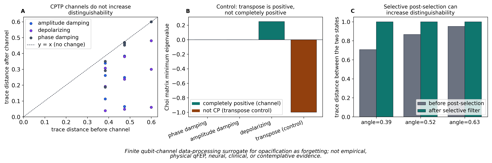
The quantum Cramer-Rao estimation audit operationalises the precision limit on inferring the separation parameter from the boundary. The classical Fisher information of any measurement is bounded by the quantum Fisher information of the state family, computed here from the symmetric logarithmic derivative (Braunstein and Caves 1994; Paris 2009); that bound is itself a data-processing inequality for Fisher information. The discriminating control is a coherent-versus-classical contrast. When the separation parameter is encoded coherently, the interior’s decohered pointer-basis measurement strictly loses information relative to the quantum bound while the symmetric-logarithmic-derivative measurement saturates it; when the parameter is encoded classically in populations, the pointer measurement is already optimal and there is no gap. The information gap is therefore created by the coherence that opacification renders inaccessible, not by construction. The audit is a finite deterministic single-qubit estimation-theory computation, not a metrology experiment and not a neural, clinical, or physical qFEP claim.
The Blackwell Bayes-risk audit grounds the manuscript’s recurring “use is licensed, ontology is not” reading in statistical decision theory. A boundary observation channel defines a decision problem whose Bayes risk, the expected loss of the optimal decision rule, measures the channel’s decision value. By Blackwell’s theorem an invertible relabeling of the boundary outcomes, the decision-theoretic image of an admissible QRF sector relabel, is a reversible post-processing and preserves the Bayes risk exactly, so deciding is just as good under any admissible relabeling and use of the boundary is licensed (Blackwell 1953). A genuine garbling, a lossy and irreversible post-processing standing for the collapse of the boundary into an ontology, can only raise the Bayes risk, and a nontrivial one strictly does; over a dense grid of garblings no post-processing ever lowers it, and a complete erasure reaches the prior chance risk. Relabel-preserves versus garble-degrades is the measured ordering. The audit is a finite deterministic statistical-decision computation, not a neural, clinical, or physical qFEP claim.
The no-signaling scenario library audits finite probability tables for no-signaling, that is, that each party’s marginal is independent of the other party’s setting. The quantum CHSH-Bell and product scenarios satisfy it; a deliberately disturbing table that injects a setting-dependent marginal is the discriminating negative control and is correctly flagged as signaling. This is a finite no-signaling and no-disturbance audit over a software scenario library, not a contextuality proof and not empirical evidence.
The n-cycle contextuality library generalizes the CHSH and triangle scenarios to a parameterized family of compatibility cycles (Araújo et al. 2013). For each cycle length the same deterministic-assignment linear program tests whether a behavior lies in the noncontextual polytope, applied to perfect anti-correlation, the n-cycle quantum correlation at minus cosine pi over n, and an uncorrelated control. The discriminating signal is the odd-versus-even dichotomy cross-checked against graph two-colorability: odd cycles, including the five-cycle pentagon, are not two-colorable, so their frustrated behaviors have no noncontextual model and the program is infeasible, while even cycles stay feasible and the uncorrelated control is always feasible. Every verdict is measured linear-program feasibility cross-checked against two-colorability rather than an asserted optimal quantum violation, so the audit is a finite contextuality-structure library and not empirical evidence.
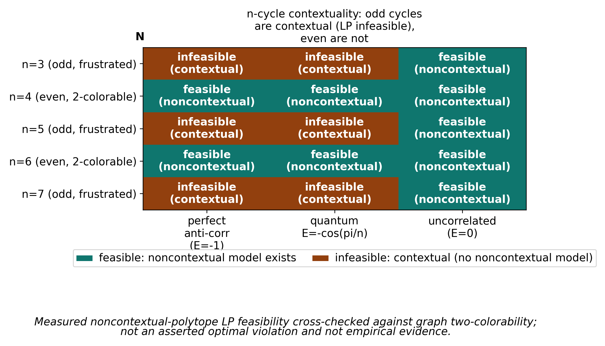
The contextuality witness in fig. 25 separates CHSH strength from basis-sweep entropy behavior. The figure supports only a finite CHSH witness and local-basis invariance control; it is not a general QRF contextuality proof.
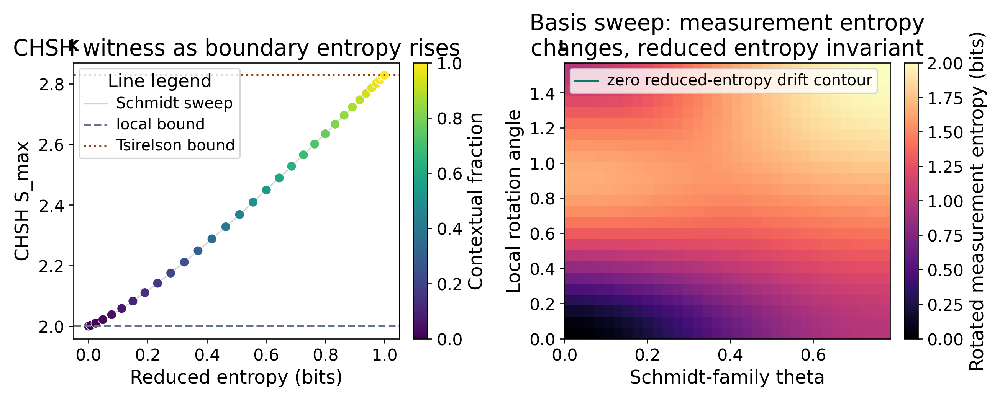
The CHSH measurement-cover table in fig. 26 records context-by-outcome probabilities, no-signaling checks, product-control locality, and Bell-state Tsirelson behavior. The companion local-polytope audit in fig. 27 solves the finite feasibility problem over deterministic assignments, following the Fine joint-distribution criterion for the Bell inequalities (Fine 1982), so the Bell table’s contextuality is visible as local-polytope infeasibility rather than a decorative label. A separate independent cross-check rederives CHSH, Tsirelson, product locality, and local-polytope feasibility without calling the original quantum helper functions, and its perturbed expected-value control must fail before the claim is accepted.
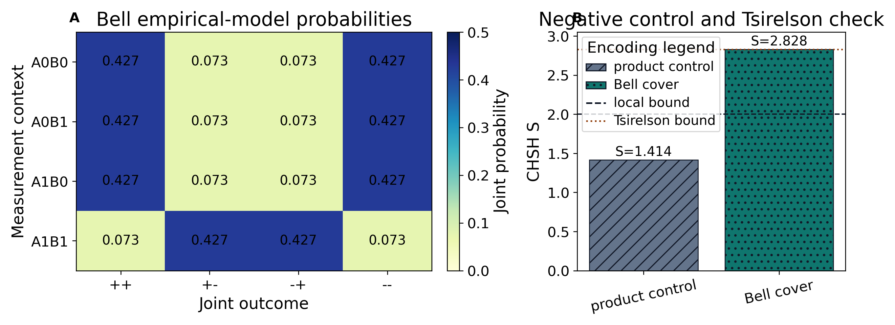
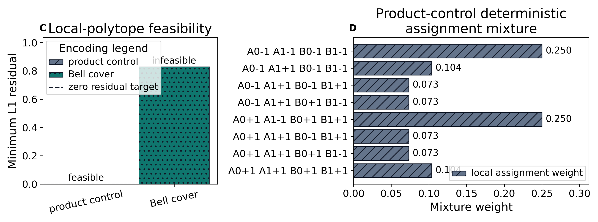
The generic measurement-cover polytope audit in fig. 28 repeats the deterministic-assignment LP over triangle, parity, CHSH-product, and CHSH-Bell scenarios. It turns the CHSH example into reusable finite obstruction machinery while remaining scenario-local and non-empirical.
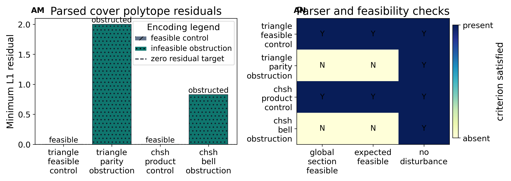
The dephasing-channel panel in fig. 29 checks trace preservation, positivity, entropy production, mutual-information contraction, and CHSH decay for a finite two-qubit channel. It validates a channel-control surface, not the source paper’s full open-system qFEP dynamics.
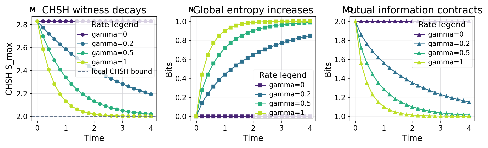
The quantum-trajectory unraveling in fig. 30 samples jump/no-jump paths and reconstructs finite Lindblad densities using seeded Monte Carlo wave-function trajectories (Dalibard et al. 1992; Mølmer et al. 1993; Wiseman and Milburn 2010). The convergence audit in fig. 31 varies trajectory count, compares against exact Lindblad evolution, and requires a too-few-trajectory negative control to fail (Plenio and Knight 1998).
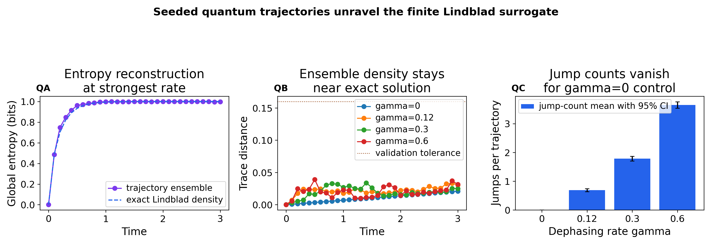
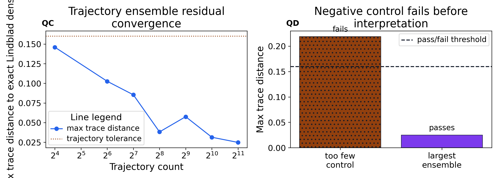
The thermodynamic channel-cost audit in fig. 32 separates finite entropy accounting from thermodynamic overclaim. Declared channels must be CPTP, non-CPTP controls are rejected, and Landauer lower bounds are reported only as kBT-scale software quantities.
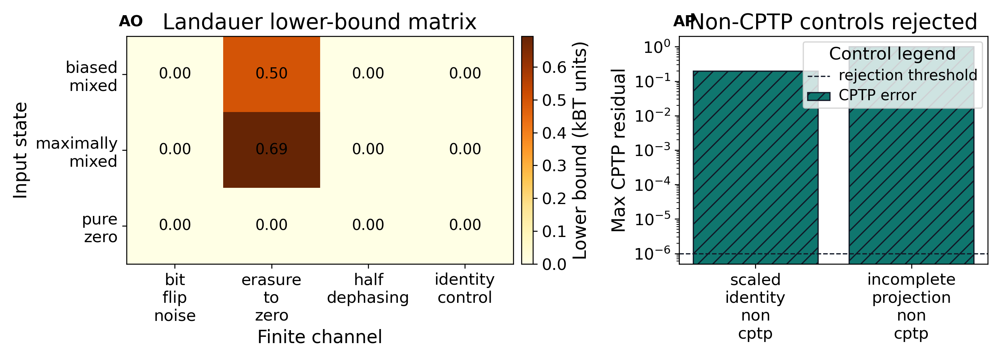
The boundary-Hamiltonian Lindblad engine in fig. 33 is an implemented finite qFEP extension surrogate with trace, positivity, entropy, mutual-information, and malformed-dynamics controls. It gives a deterministic open-system test bed without licensing physical qFEP realization.
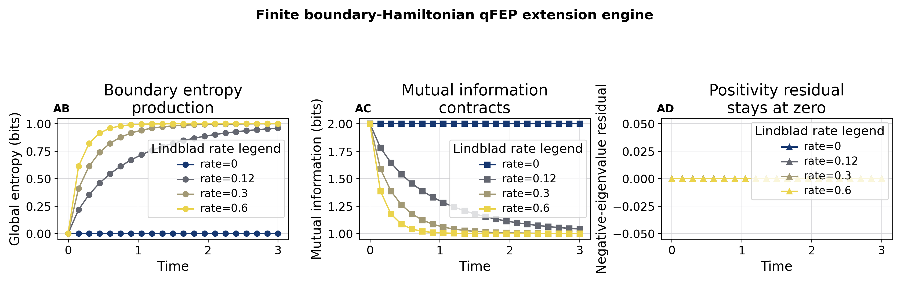
The many-body screen panels in fig. 34 and fig. 35 test cut sensitivity, separable controls, random-cut non-evidence controls, and sparse exact scaling. These figures are many-body software diagnostics, not proof that a real observer boundary has been found.
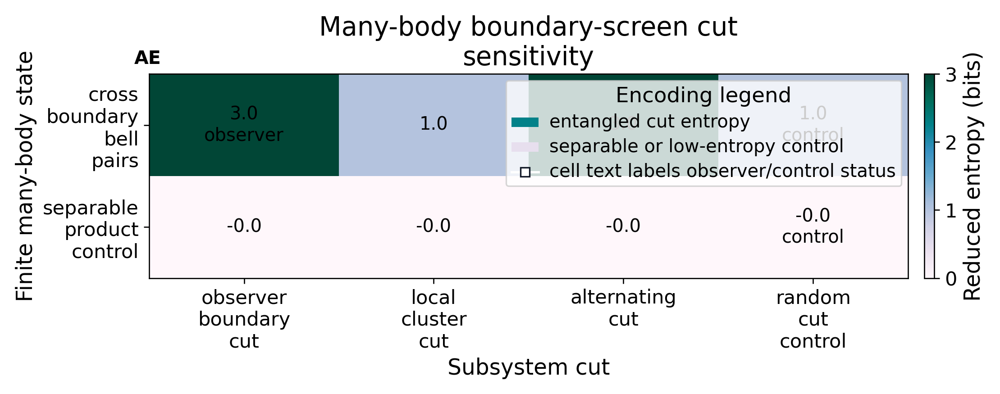
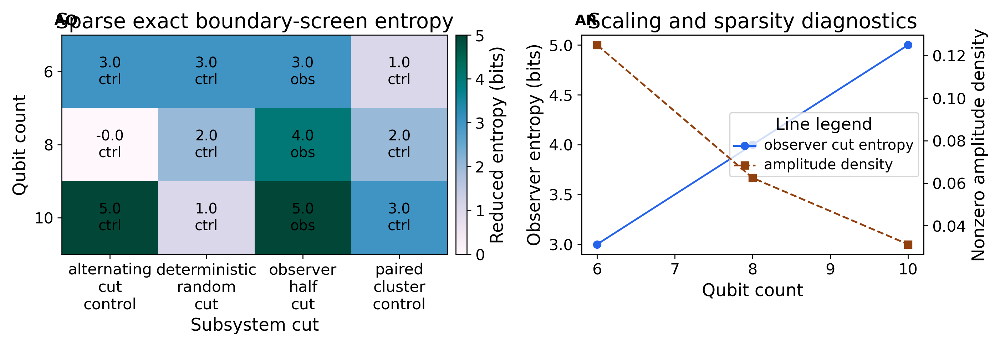
The sheaf-contextuality audit in fig. 36 distinguishes feasible global-section controls from an obstruction case, while the QRF relabeling and frame-covariance audits in fig. 37 and fig. 38 check admissible probability-preserving maps, spectra, reduced entropies, and invalid transform rejection. These are finite covariance and obstruction checks, not full quantum-reference-frame physics (Bartlett et al. 2007).
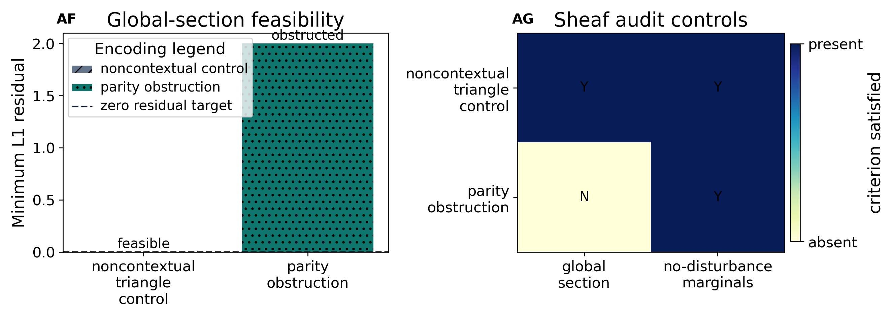
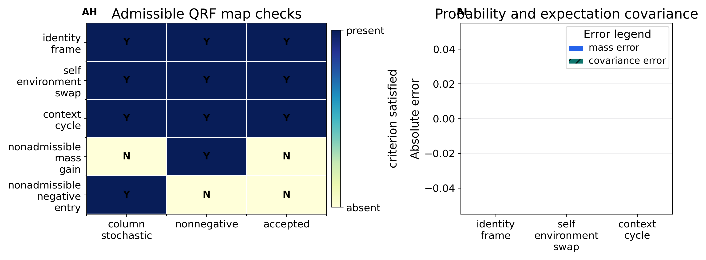
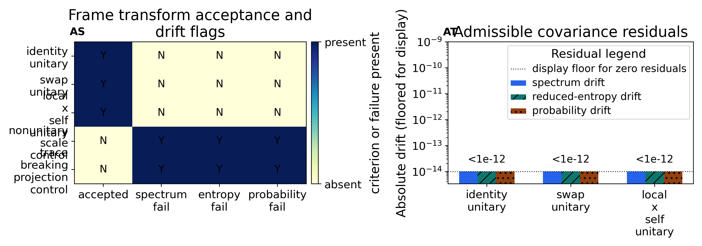
The empirical adapter in fig. 39 remains fail-closed: synthetic fixtures can be software demos only, unsourced human data are blocked, and preregistered placeholders without preprocessing provenance cannot support empirical claims. The roadmap readiness matrix in fig. 40 records which finite engines are implemented and which external-evidence classes remain blocked.
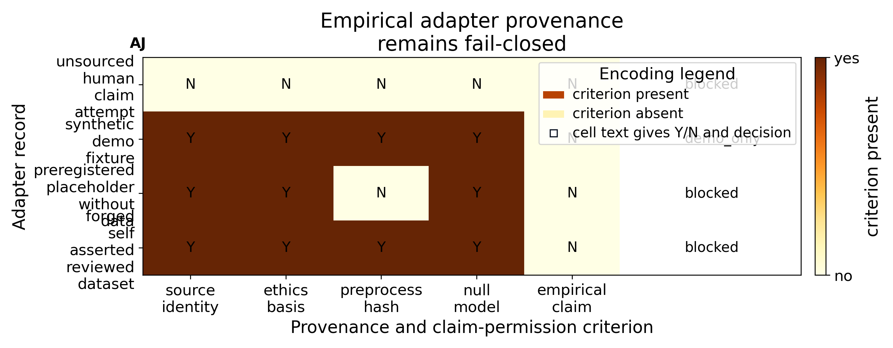
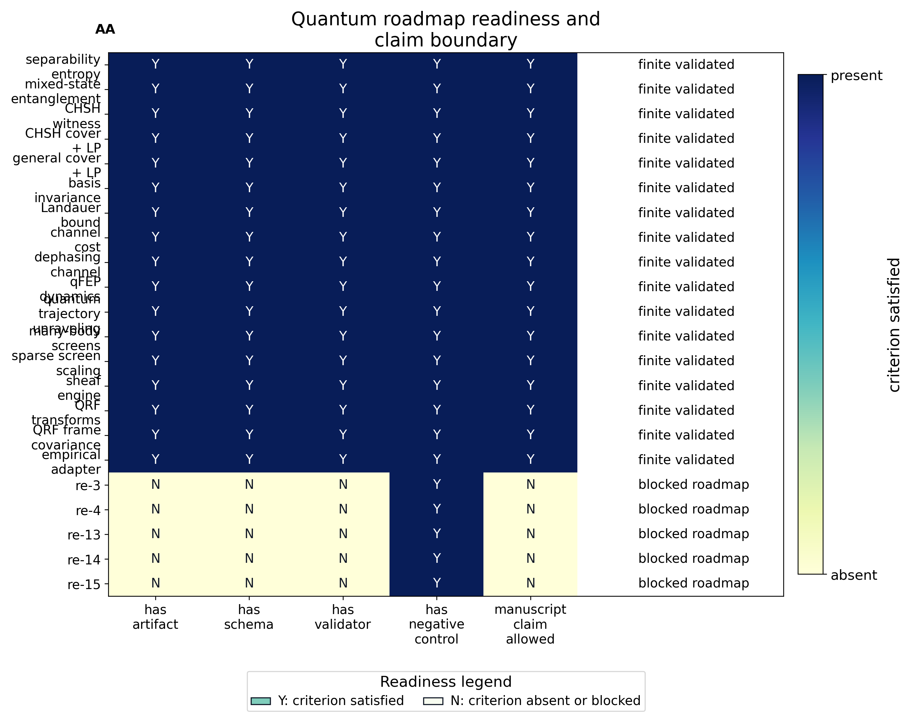
7.3 Criticality Signatures with Null Controls
The criticality layer computes two finite signatures over seeded boundary-channel activity series drawn from the active-inference trajectories. A branching ratio is estimated as descendants per ancestor over each activity series, and an avalanche-size distribution is extracted from maximal supra-threshold runs of that activity and summarised by a finite power-law-versus-exponential log-likelihood-ratio diagnostic (Beggs and Plenz 2003). The derived criticality index is the absolute distance of the measured branching ratio from one. These signatures are not dispositive even in empirical neuroscience without stronger controls (Touboul and Destexhe 2017; Destexhe and Touboul 2021).
The engine carries both kinds of control. For branching, the discriminating negative control is a seeded permutation of each original observation series, preserving its histogram while disrupting temporal order. A profile’s measured branching ratio is credited as separated only when its real and shuffled ninety-five percent confidence intervals are disjoint. The other trajectory metrics retain independently sampled uniform observation/action controls; their contrasts do not isolate temporal order at fixed marginals. The aggregate readiness gate requires a strict majority of profiles to separate on measured branching, independently reconstructed from the recorded trajectories and run summaries. The positive control is a planted-branching calibration: a pure geometric activity series with a known branching ratio is fed to the estimator, which must recover the planted value within tolerance. This calibrates the finite estimator, not an empirical criticality claim. The effect-size forest separately reports profile-minus-random-null differences, run-level mean-difference and Cliff’s-delta bootstrap intervals, and Holm-adjusted permutation tests.
These signatures structure the shape of a future empirical test; they are not neural measurements, clinical outcomes, or evidence that any contemplative practice produced a critical regime.
7.3.1 Seeded Criticality Indicators with Null Controls
The reported outputs distinguish temporal-order diagnostics from descriptive trajectory summaries. fig. 42 reports finite software observation entropy and switching rate under independent random controls. Measured branching uses a histogram-preserving shuffled control in fig. 41.
fig. 41 reports measured branching against shuffled null controls as a finite software diagnostic, not a measurement of neural avalanches or branching in any nervous system. The single-trace avalanche histogram is descriptive: when fewer than three sizes are available, the shape comparison returns zero as an insufficient-sample convention and cannot discriminate distributions. The branching-ratio separation against the shuffled null supplies the gated comparison. The surrogate fixes the shape of a future empirical test; it does not observe criticality.
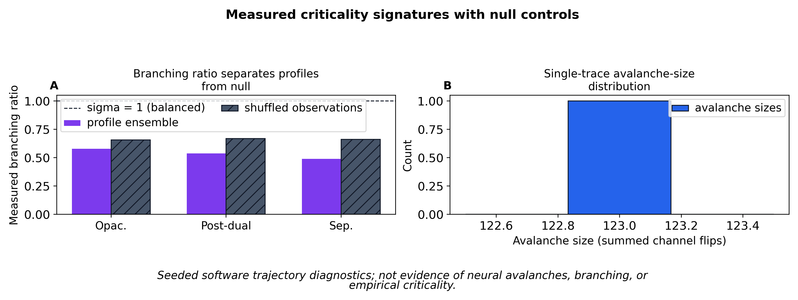
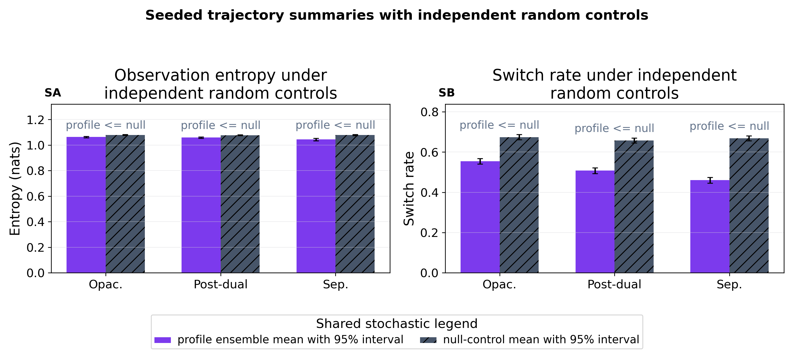
The effect-size forest estimates uncertainty for the contrasts themselves. For each profile and trajectory metric, independent complete runs are resampled separately in the two groups, and both the mean difference and tie-aware Cliff’s delta are recomputed in each of 2,048 replicates. These are pointwise percentile intervals; they are not simultaneous coverage guarantees and timesteps are not independent replicates. The intervals in fig. 45 match these contrast estimands (Westfall and Young 1993).
The two-sided mean-statistic permutation calculation uses 4,095 independent random label permutations with the plus-one correction, giving an attainable resolution of one over 4,096. Its validity as a test requires exchangeability under the null, a stronger assumption than equal means alone. The artifact records seeds, exceedances, draw counts, Monte Carlo standard errors, and exact binomial bounds. Bonferroni bounds across the declared eighteen-contrast family are propagated through the monotone Holm adjustment to flag decisions whose finite-permutation uncertainty straddles the threshold. This Monte Carlo uncertainty is separate from uncertainty across simulated trajectories; a nonrejection is not evidence of equality.
The branching comparison has a different sampling design. Each original trajectory is paired with its own fixed histogram-preserving shuffle, and the paired bootstrap resamples intact original/shuffle run pairs. fig. 43 reports an interval for that difference without replacing the existing disjoint-interval gate. It conditions on one shuffle per run and does not integrate over all possible shuffle realizations. No paired sign-flip p-value is asserted, because pairing alone does not establish null sign symmetry.
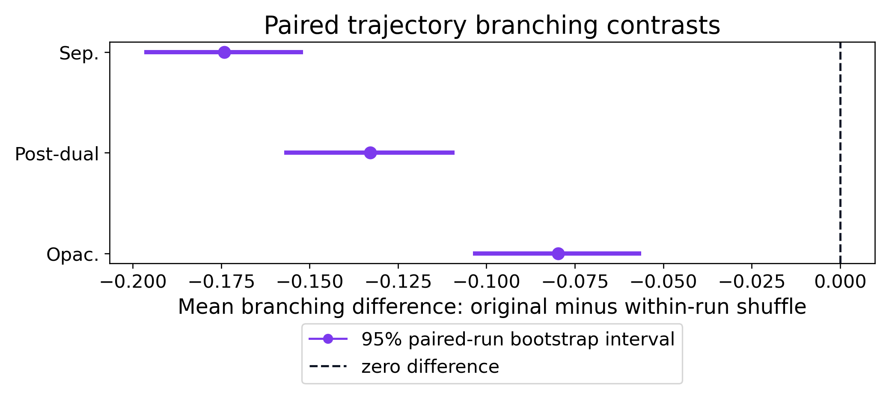
Calibration now includes 128 independent seeded normal-generator repetitions in addition to the original null, injected-shift, and sign-flip fixtures. Each repetition records actual intervals and rejection/coverage outcomes for zero and unit shifts. Exact binomial intervals accompany the rejection and coverage frequencies in fig. 44; the nominal lines are references, not certificates. At zero or complete rejection the plug-in Monte Carlo standard error is zero, but the exact binomial interval still exposes finite-budget uncertainty. This is a limited generator diagnostic, not empirical power, universal type-I-error control, or Bayesian posterior calibration.
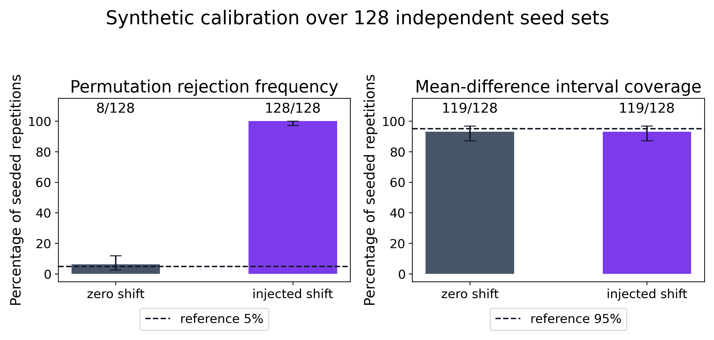
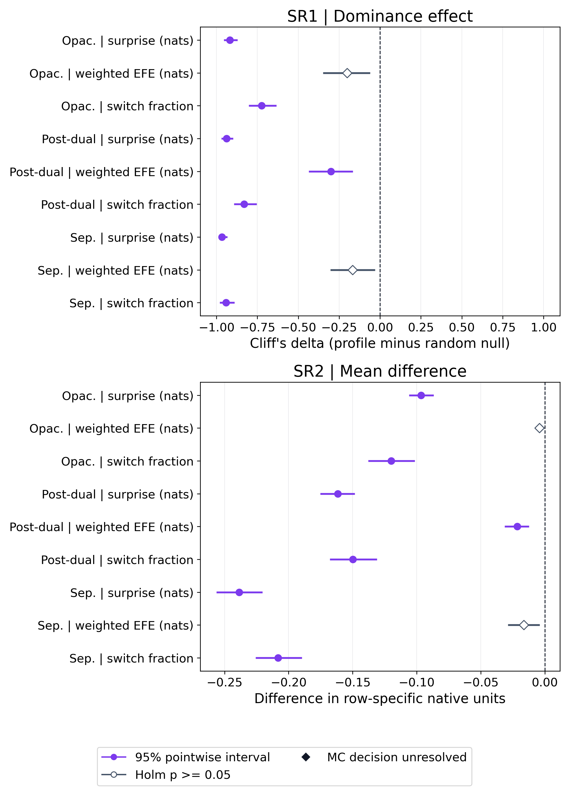
7.4 Compassion Scope as a Precision-Weighted Policy Proxy
The compassion-scope engine operationalises the source paper’s
section 6.2 claim that an enforced separation prior preferentially
scopes free-energy minimisation to the self partition. Concern per
boundary channel is computed as
(1 + realised action-influence) * precision_weight, which
blends the realised action-influence of the shared bitstream with the
separation prior’s precision allocation to that channel. The
action-influence is measured per channel as the fraction of baseline
prediction error removed when the selected action is conditioned on,
over a finite boundary stream in which each channel tracks the action
with a declared controllability faithful to the b0-b5 roles (the
body-controllability and action-contingency cues are strongly
action-driven, the distal-world cue least). On this corpus the measured
per-channel influence ranges from near zero on the least
action-contingent channel to its largest value on the most
action-contingent channel, so the term genuinely shapes concern rather
than scaling it uniformly: holding the precision fixed and removing the
influence term measurably shifts the scope asymmetries. Because a raw
scope summed over a partition is confounded by how many channels each
partition contains, concern is normalised per channel as a mean rather
than a sum, so the reported self versus non-self contrast reflects the
mechanism and not the partition sizes. The engine reports the
scope-asymmetry between non-self and self concern per profile.
The discriminating negative control is a precision ablation rather than a label shuffle. A size-preserving label shuffle cannot falsify a quantity whose self and non-self split is governed by partition size and prior precision, so it would pass by construction; ablating the separation prior’s self-precision boost instead collapses the constrained profile’s self-concentration and shrinks the overall spread, which isolates the separation prior as the cause of the modeled self-privileging. The ablation preserves the channels and their activity and removes only the precision boost, so a change under ablation is attributable to that prior. The action-influence term carries its own discriminating controls: it tracks the per-channel controllability, it falls to near zero on a stream with no action-contingency, and it collapses when an action shuffle permutes the actions against the observations and destroys the realised influence, so the blend’s bitstream half is measured and falsifiable rather than asserted.
7.4.1 Compassion Proxy as Modeled Policy Scope
The proxy is defined as widening the field of modeled error without privileging a self sector, and the artifact reports this as a policy-scope quantity, not a moral or clinical endpoint. As shown in fig. 46, the scope-asymmetry is negative under the separation-constrained profile, where concern concentrates on the self partition, and rises toward zero under the opacified and post-dual profiles, where concern widens to non-self channels. The precision-ablation control collapses the constrained profile’s self-concentration and shrinks the overall spread, confirming that the modeled self-privileging tracks the separation prior rather than the partition sizes. This is a finite policy-scope surrogate; it is not a measure of compassion, well-being, practice efficacy, or any affective, moral, or clinical outcome.
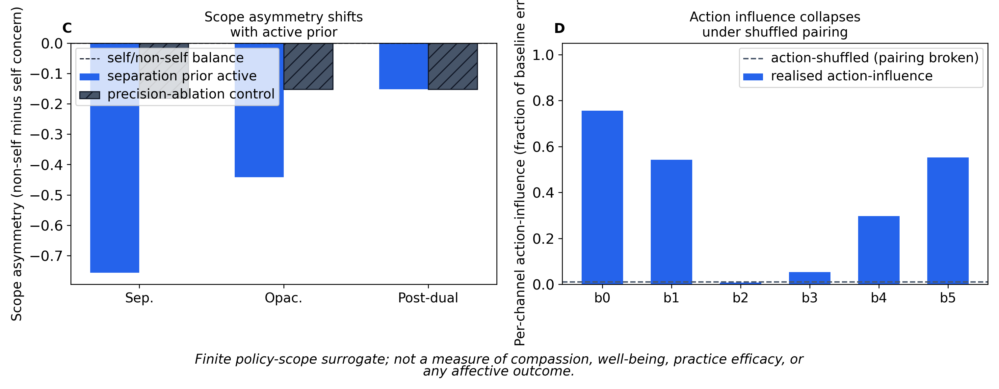
7.5 Source-Role Ledger
The scholarship layer is an executable source-role matrix, not a
decorative bibliography.
data/sources/scholarship_manifest.yaml records the primary
preprint, qFEP foundations (Fields et al. 2022;
Fields and
Glazebrook 2023), QRF and boundary background (Giacomini et al.
2019; Chen and Giacomini 2026; Vanrietvelde et al. 2020; Bartlett et al.
2007; Rovelli 1996; Kirchhoff et al.
2018; Hipolito et al. 2021), finite
quantum-information, decoherence, contextuality, open-system, and
trajectory references (Nielsen and Chuang
2010; Vedral
2002; Bell 1964;
Clauser et al.
1969; Spekkens 2005; Abramsky and Brandenburger 2011; Zurek 2003; Landauer
1961; Lindblad 1976; Gorini et
al. 1976; Dalibard et al. 1992; Mølmer et al.
1993; Wiseman
and Milburn 2010), self-evidencing and FEP background with
critique and qualified response (Hohwy 2016, 2026;
Friston et
al. 2023; Possati 2025; Beck and
Ramstead 2025; Aguilera et al. 2022; Biehl et al.
2021; Heins and Da Costa 2022; Bruineberg et al.
2022), active-inference, expected-free-energy, habit, and
Bayesian model reduction methods (Friston 2010; Friston et al.
2015, 2016; Da Costa et al. 2020; Parr et al. 2022; Friston and Penny
2011), the pymdp implementation anchor (Heins et al.
2022), metacognitive and contemplative-cognition context
(Sandved-Smith et al. 2021; Limanowski and
Friston 2018; Lutz et al. 2015; Laukkonen and Slagter
2021; Laukkonen et al. 2025; Dahl et al. 2015; Tal et al.
2026; Prest
2026; Prest et al. 2026), criticality context
and false-positive cautions (Cocchi et al.
2017; Shew
and Plenz 2013; Wilting and Priesemann 2019; Touboul and Destexhe 2017; Destexhe and Touboul 2021),
care/compassion context (Doctor et al. 2022;
Strauss et al. 2016; Singer and
Klimecki 2014), and Buddhist, enactive, and phenomenological
terminology boundaries (Siderits and Katsura
2013; Westerhoff 2009; Garfield
1995; Varela
et al. 1991; Zahavi 2005).
The scholarship ledger separates primary-target recapitulation from
background theory, software implementation, simulated proxy context,
terminology, and limitations. This matters because a source can justify
vocabulary without licensing a stronger claim. Quantum-information,
Bell, CHSH, contextuality, decoherence, open-system, Monte Carlo
wave-function, quantum-measurement/control, and Landauer sources support
only the finite entropy, witness, measurement-cover, local-polytope,
channel, trajectory, and roadmap vocabulary; QRF, relational, and
perspective-neutral frame sources support transformation or
observer-relative vocabulary without making the finite relabeling screen
a full QRF theory; criticality sources support only future
empirical-adapter vocabulary; contemplative-cognition sources support
only the modeling interface and limitation language; discrete
active-inference and pymdp sources support the
active-inference loop; Markov-blanket sources support boundary-formalism
context; and the primary paper remains the target for the
qFEP/QRF/no-self-evidence formal recapitulation.
The boundary critique is intentionally double-sided. Markov blankets can remain useful as epistemic tools for model factorization, but Bruineberg et al.’s Pearl/Friston distinction blocks the move from formal blanket use to metaphysical boundary discovery (Bruineberg et al. 2022). Relational quantum mechanics and enactive neurophenomenology similarly motivate relational and enacted-interface language while withholding proof that this artifact has simulated a physical observer boundary or a literal quantum reference frame (Rovelli 1996; Varela et al. 1991). The contemplative sources add another distinction rather than a result claim: organismic self-evidencing, precision reweighting, letting-go models, and identified-with self language are conceptual context for reading profile labels, not evidence that the model induces or measures contemplative attainment (Hohwy 2026; Tal et al. 2026; Prest 2026; Prest et al. 2026).
Each source row declares what kind of support it can provide.
Discrete active-inference sources support the
A/B/C/D,
expected-free-energy, and policy-selection machinery; Markov-blanket
sources support boundary vocabulary only when paired with critiques and
qualified responses that keep boundary ontology assumption-sensitive;
QRF and relational sources support transformation, perspective, and
observer-relative language without making the finite relabeling screen a
full quantum-reference-frame theory; quantum-information, Bell/CHSH,
contextuality, quantum-operation, GKSL/Lindblad, and Monte Carlo
wave-function sources support finite entropy, witness,
measurement-cover, local-polytope, channel-cost, dephasing, and
trajectory-unraveling controls but not the full source-paper qFEP
argument (Spekkens
2016). Criticality sources support proxy and future-adapter
vocabulary while explicitly warning that scaling signatures can mislead.
Contemplative sources support model-interface language and selfing
distinctions. None of these rows upgrades the finite surrogate into
empirical, clinical, neural, full qFEP, or practice-outcome
evidence.
The ledger is deliberately claim-first rather than bibliography-first. A citation can enter the manuscript only through a scoped role, a track, and one or more local claim IDs (Munafò et al. 2017). This prevents a common failure mode in interdisciplinary work: importing a strong source from one domain, then allowing its authority to leak into another. Here, a quantum-trajectory citation can justify the stochastic unraveling algorithm; it cannot make the trajectory a physical qFEP realization. A contemplative-cognition citation can justify interface vocabulary; it cannot make the protocol an efficacy claim (Garfield 1995).
The companion claim-support audit binds those source roles to public claim IDs, required artifacts, and evidence ceilings, checking source roles claim by claim rather than counting references globally: a public claim can pass only when it has a gate, an artifact, scoped support, and an evidence ceiling. These matrices are governance surfaces, not authority for stronger claims, and their full visual audit panels are rendered with the supplemental figure source maps in sec. 7.8.3.
7.5.1 Targeted methodological expansion and provenance
The 2026-10-14 expansion adds 32 sources to the existing 93-entry
ledger. The search was targeted to unresolved interpretation and
validation questions rather than designed as a systematic review:
contrast estimands, dependent observations, random-permutation p-values,
time-series surrogates, computational calibration, active-inference
assumptions, quantum-reference-frame resources, and contemplative
measurement. Publisher records, author-deposited manuscripts, arXiv
records, and DOI-registration metadata were checked for title, authors,
publication year, and persistent identifier. The journal issue year is
used when online-first and issue dates differ; McGregor et al.’s minimal
agent is retained as a preprint (McGregor et al. 2015). The repository’s
docs/scholarship-expansion.md records source-level
contributions, limitations, and persistent links. This targeted curation
does not establish completeness or agreement across the relevant
disciplines.
The statistical additions supply distinct roles rather than interchangeable endorsements. Simulation-design sources specify estimands and Monte Carlo performance reporting (Morris et al. 2019; Burton et al. 2006). Stationary resampling and exchangeability sources identify when observations or blocks may be rearranged (Kunsch 1989; Politis and Romano 1994; Winkler et al. 2014). Random-permutation sources constrain attainable p-values and exactness conditions (Phipson and Smyth 2010; Hemerik and Goeman 2018), while stepdown methods provide a multiplicity comparison (Romano and Wolf 2005). Surrogate-data sources define which temporal properties a null preserves (Theiler et al. 1992; Schreiber and Schmitz 1996). Monte Carlo error, proper scoring, and Bayesian software calibration sources address different aspects of numerical accuracy, prediction, and inference correctness (Flegal et al. 2008; Gneiting and Raftery 2007; Cook et al. 2006; Modrák et al. 2025; Säilynoja et al. 2026). None supplies empirical power or validates an unimplemented method.
The interpretation additions similarly constrain transfers between domains. Active-inference process theory and minimal models make algorithmic commitments inspectable, while critiques of objective derivation and model attribution constrain their interpretation (Friston et al. 2017; McGregor et al. 2015; Buckley et al. 2017; Millidge et al. 2021; Es 2021). No-cloning and no-broadcasting constrain physical transformations rather than copying numerical descriptions (Wootters and Zurek 1982; Barnum et al. 1996). Asymmetry-resource methods require a specified symmetry and allowed-operation class (Gour and Spekkens 2008; Marvian and Robert W. Spekkens 2014b; Marvian and Robert W. Spekkens 2014a). Phenomenological interviewing and first-person-data integration concern elicited reports and their relation to independently collected data (Petitmengin 2006; Lutz et al. 2002); measurement critiques and adverse-experience studies specify future construct and safety boundaries (Grossman 2008; Davidson and Kaszniak 2015; Van Dam et al. 2018; Lindahl et al. 2017; Britton et al. 2021). All new rows bind existing claim IDs. The source PDF, claim registry, and evidence ceilings retain their existing authority.
7.6 Embodied-Practice Protocols as Bounded Model Interventions
Practice protocols are model interventions only. They map attentional opacification, dependent-origination inquiry, and compassion alignment to changes in metacognitive access, prior precision, and QRF policy selection (Sandved-Smith and Da Costa 2024; Lutz et al. 2008). The bounded model-intervention deltas behind these protocols are rendered as a software-interface specification in sec. 5.3, where each protocol’s safety boundary is printed on the figure; nothing here is therapeutic advice, a claim of realization, a moral prescription, or a clinical protocol, and the practice layer stays outcome-independent unless reviewed evidence and ethics constraints are added.
The numerical deltas are declared as Generalized Notation Notation (GNN) mapping metadata and read into the practice governance artifact. They are not applied to simulation state and do not demonstrate an intervention effect. Safety wording and the prohibition on user-facing efficacy claims remain in the implementation, independently of those editable numerical declarations.
7.7 Contemplative Inquiry as Progressive Opacification
This section adapts the source paper’s “contemplative inquiry as progressive opacification” into a reader-facing interpretation scaffold for the software artifacts. Opacification means making an organizing channel visible as a channel: a boundary, prior, label, or proxy that had been read through becomes available to inspect. The section offers concepts, prompts, and slogans for reading the figures and ledgers; it is not a procedure, therapy, moral instruction, practice prescription, or claim that any prompt produces a cognitive, contemplative, clinical, neural, experiential, or developmental result. It inherits the practice-layer rule in the practice supplement (sec. 7.6). User-facing language remains safety-bounded and outcome-independent unless separate evidence and ethics constraints are added.
The added contemplative-phenomenology sources make this section narrower, not more prescriptive. They help distinguish self-evidencing organismic function from identified-with self language, and precision reweighting from any claim of realized insight (Hohwy 2026; Tal et al. 2026; Prest 2026; Prest et al. 2026). The reading scaffold therefore treats “self”, “body”, “action”, “other”, and “care” as labels over a finite file, not as diagnoses of experience, instructions for meditation, or evidence that a practice changes a person.
7.7.1 Opacification ladder
The ladder is a way to read the model states, not a path a person is asked to follow.
- Separation-constrained: the boundary screen is readable, but one self/world cut is treated as the default frame for the file.
- Opacified: a once-transparent channel becomes inspectable, so action, other, care, or body salience can be read as a modeled assignment rather than as a fact discovered in the stream.
- Post-dual: the same finite bitstream is kept while no single channel is privileged as the self side; this is a bookkeeping regime for the artifact, not an attainment claim.
- Meta-manuscript: gates, source maps, and evidence ceilings make the manuscript’s own claim machinery inspectable in the same way.
7.7.2 Concept associations
These associations name software objects and how to read them. They do not describe, predict, or prescribe any human outcome.
- Boundary screen (b0-b5): a six-channel ledger of where “inside” is being drawn; each channel is a modeled line, not a found ontology.
- Bitstream: the recorded values available to the finite artifact; “self” and “world” are frame-dependent readings over that record.
- Separation prior sigma: a useful default that treats the self/world line as given until its finite value no longer pays.
- QRF sector relabeling: renaming the side assignments while keeping the recorded stream fixed.
- Separation-constrained profile: a frame that has committed to one cut and reads other assignments through that cut.
- Opacified profile: a frame in which a background channel has become available for direct inspection.
- Post-dual profile: a bookkeeping regime in which no channel is privileged as the self side.
- Organismic self-evidencing: the model’s continuing inferential and policy-selection function; this is not identity, personality, personhood, or health.
- Identified-with self: a conceptual contrast used to prevent conflating profile labels with ownership or attainment; the artifact does not measure, reduce, or eliminate it.
- Bayesian model reduction: a thrift rule that keeps a prior where it earns predictive value and prunes it where it does not.
- Indistinguishability: several admissible frames fit the same finite record, so the data cannot decide which frame is ontologically real.
- Compassion scope-of-concern proxy: a bounded policy-scope radius, useful for auditing model assignments and never a virtue measure.
- Criticality proxies: dial readings near a modeled transition regime, useful as gauges and never as goals.
7.7.3 Profile prompts
Each prompt is an invitation to inspect a software artifact; none asserts that holding the question yields any insight, change, or experience.
Separation-constrained. Which line is being read as given, and where did the model draw it? What is the separation prior doing for this frame? Which of the six channels is being looked through rather than looked at?
Opacified. When a channel shifts from background to inspectable, what had it been carrying? Reading action, other, and care side by side, what does the model now count that it previously absorbed into “self” or “world”? Did the recorded stream change, or did the frame of inspection change?
Post-dual. With no privileged self/world cut on the screen, what is still organizing the file? Reading indistinguishability directly, what does the data decide and what does it leave open? If the same bits admit several frames, which frame is still being treated as the default?
7.7.4 Slogans for reflection
Aphorisms for reflection only; each names the no-self-evidence logic and claims no effect.
- Use the boundary; do not promote it.
- Same bits, different frames.
- The cut is drawn, not found.
- Inspect the channel you look through.
- A prior earns its keep or leaves.
- Relabel the sector; keep the stream fixed.
- Undecided by the data is a disciplined result.
- A gauge is not a goal.
- No channel owns “me.”
- What organizes the screen is also inspectable.
- A useful frame is not an ontological verdict.
- Hold the cut lightly; audit it strictly.
7.7.5 Reading order
This is optional scaffolding for inspecting artifacts in a chosen order. It is not a procedure, a practice with intended results, a therapy, or a moral instruction, and it claims no effect of any kind; a reader may stop, reorder, or ignore any item. The opacification arc gives one possible reading order, not a path.
- Read the separation-constrained profile. Inspect its boundary-screen geometry in sec. 4.1 and the separation-prior life cycle in sec. 3.3. The question is where the self/world line is being treated as given.
- Read the opacified profile. Inspect where action, other, and care channels become visible in fig. 1, alongside the Bayesian model reduction behavior in sec. 4.3. The question is which previously transparent channel is now inspectable.
- Read under indistinguishability. Inspect the permission rule in fig. 3. The question is what the bits decide and what they leave undecided.
- Read the post-dual profile. Inspect its policy realization in sec. 4.4. The question is what organizes the file when no cut is privileged.
- Read the proxies as gauges. Inspect the compassion scope-of-concern proxy in sec. 7.4.1 and the criticality indicators in sec. 7.3.1. The question is what these gauges report and what they do not claim.
The three bounded practice protocols can be mapped onto this order only as labeled reading lenses, with the same ceiling: attentional opacification alongside item 2, dependent-origination inquiry alongside item 3, and compassion alignment alongside item 5. The bounded model-intervention deltas behind them are rendered in fig. 15. Each lens is a way of organizing inspection of the software, with no claimed outcome, and nothing in this section should be read as evidence of realization, clinical benefit, neural change, contemplative attainment, or practice efficacy.
7.8 Reproducibility Gates and Meta-Manuscript Record
This final supplement section is the meta-manuscript record. It collects the reproducibility commands, validation gates, claim ceilings, source-map audits, local release ledgers, review-response hardening, dashboard checks, and supplemental limits that make the paper inspectable without enlarging the main evidential claim. These checks are manuscript and software accountability surfaces. They are not empirical data, clinical evidence, neural measurement, contemplative-attainment evidence, or physical qFEP realization.
7.8.1 Reproducibility Gates
The local chain runs formalism generation, boundary-agent simulation,
BMR sweeps, sensitivity sweeps, criticality and practice maps, figure
generation, sheaf composition, dashboard and review-response hardening,
variable hydration, post-hydration hash refresh, and output validation
in a fixed order. The validation report records 434 passing
output checks across 434 total checks after the latest
full-chain run.
The gates are fail-closed and cover the full surface, one family per check:
- Source hash: the attached PDF recorded in
data/sources/source_manifest.yamlis verified against SHA-25694e2335c3a4a37b8d49039b11b45ccda25bad65d4b80aa15428b84abfba699ac. - Model declarations:
gnn_model_audit_okchecks source-bound Generalized Notation Notation (GNN) contracts, upstream provenance, admitted tensors or finite parameters, and bounded execution receipts; model-specific numerical and claim gates remain necessary. - Formalism: all fourteen equations must be mapped to artifacts and boundaries.
- QRF: boundary-label indistinguishability holds across admissible relabelings, plus a failing negative control.
- Quantum and implemented extension engines: product-state and Bell-state entropy, mixed-state PPT and negativity, local and Tsirelson CHSH, basis invariance, CHSH measurement-cover normalization, no-signaling, local-polytope feasibility, generic measurement-cover linear programs, CPTP channel-cost, trace-preserving dephasing, boundary-Hamiltonian Lindblad trace/positivity/entropy, seeded quantum-trajectory norm/trace/PSD/reconstruction, exact and sparse many-body cut sensitivity, sheaf obstruction, QRF transformation and frame covariance, the multipartite witness, tensor-network, collision-model, no-signaling-library, and n-cycle contextuality controls, with physical qFEP and human-practice evidence explicitly blocked.
- Roadmap-TODO: future-only TODO rows may not duplicate implemented extension IDs.
- Dependency graph: quantum, stochastic, visual, claim, manuscript, dashboard, and render nodes must all be represented.
- Manifest: every generated data or figure output must appear in the artifact manifest.
- BMR and sensitivity: free-energy sign and boundary behavior must hold over the finite grids.
- pymdp: package diagnostics, normalized generative-model arrays, normalized state and policy posteriors, policy traces, and seeded ensembles with null controls.
- Visual: source-map captions, rendered captions, accessibility metadata, figure reuse, figure placement, semantic palette use, and renderer-layout telemetry must all pass.
- Structure: subsection titles, anchors, manuscript references, and figure numbering must remain machine-auditable.
- Practice and language: user-facing efficacy claims are rejected, and the manuscript gate rejects unresolved citations and positive realization, clinical, or neural-measurement language.
The public claim IDs checked by the manuscript audit are
source_boundary_unevidenceable;
separation_prior_sigma; bmr_prunes_sigma;
practice_protocol_boundary;
qfep_surrogate_scope;
quantum_separability_entropy;
quantum_contextuality_witness;
quantum_measurement_contextuality;
quantum_open_system_dephasing;
pymdp_runtime_dependency;
criticality_proxy_boundary;
compassion_proxy_boundary;
self_evidencing_boundary;
metacognitive_access_model; and
artifact_release_readiness.
The Active Inference Institute’s Generalized Notation Notation
runtime uses two source profiles. Python 3.11 uses GNN 4.1.0 at commit
46459949944e3217f8a6a804d4ff8c52829ef275. Python 3.12
through 3.14 uses GNN 5.2.0 at commit
4a7cccce6d4d7cb483f00323ec5cdd79300f3464. Packaged model
files and upstream.json retain the source and tool
identity. Admission rejects missing or duplicate sections, parser
recovery, malformed connections, invalid dimensions, non-finite
parameters, and invalid categorical probabilities. Real alternate-file
controls change an admitted parameter or tensor and check its numerical
consumer; malformed-file controls must fail. The bounded upstream native
categorical execution check establishes interoperability for that finite
model, while the local quantum and finite engines retain their own
computational checks. These controls test specification-to-execution
integrity, not scientific truth or empirical validity.
The dependency’s declared license is CC-BY-NC-SA-4.0, separate from this project’s MIT license. The runtime and packaging records must establish the actual interpreter, installed dependency revision, and availability of specification resources outside the checkout. The software supports Python 3.11 through 3.14; publication and rendering receipts remain separate from source validation. No new public scientific claim ID follows from adding this declarative model layer.
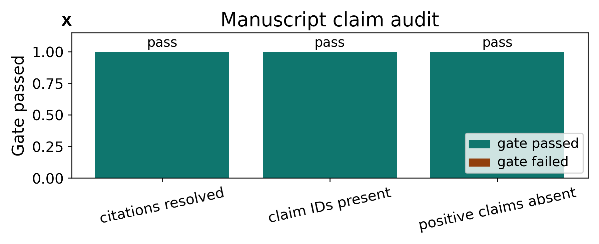
7.8.2 Claim Reading Guide and Evidence Ceilings
Public claims are treated as typed interface objects rather than free prose. Each claim ID has a reader-facing sentence, a paper locator when the claim recapitulates Sandved-Smith et al.’s source argument, a source-role rationale, an artifact, a validation gate, an evidence class, an allowed interpretation, a prohibited inference, a future-evidence boundary, manuscript-section bindings, and figure bindings. The claim-context ledger is generated from the source crosswalk, scholarship manifest, claim-support audit, evidence-ceiling audit, and source-argument coverage audit; it therefore checks whether a claim is readable in the paper, whether its support source has the correct role, and whether the validation gate is actually resolved.
Evidence ceilings are encoded in the crosswalk because limitations should not depend on a reader noticing a prose caveat. Each claim row names a prohibited inference, a future evidence requirement, and one or more boundary stressors. The stressors cover surrogate scope, empirical gaps, runtime dependencies, source-role limits, practice boundaries, quantum gaps, neural-measurement boundaries, and normative boundaries. No citation count upgrades an evidence class: source support licenses a vocabulary or method context, while the artifact gate checks only the finite software behavior declared for that class.
The claim-context evidence ladder makes the public claim surface readable, and the evidence-ceiling stress matrix is its adversarial companion: it marks which stronger readings remain disallowed even when a figure, source row, or validation gate passes. In fig. 48 the bar length reports scoped source-role count, the gate marker reports whether the validation gate resolves, and the blocked marker records the stronger reading that remains prohibited. A longer bar therefore means broader source-role context, not a higher evidence class.
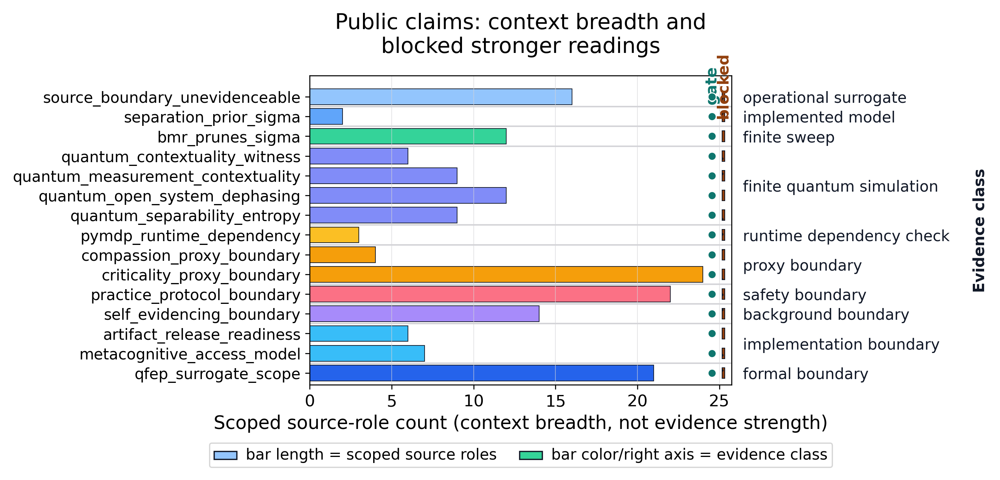
The stress matrix then separates apparently similar claims by failure mode. The QRF and sigma rows are source-role and surrogate-bound because they recapitulate a formal no-self-evidence argument over finite boundary channels. The BMR row is software-comparison bounded because pruning follows from the declared grid, not from human contemplative data. The pymdp runtime row is dependency-bound because it asserts a pinned implementation surface. The quantum rows are quantum-method bounded because they check finite density matrices, contextuality covers, channels, and trajectories without becoming a physical qFEP realization. The criticality, compassion, and practice rows are proxy or safety bounded because their local artifacts are modeled interfaces and stochastic indicators, not empirical measurements or efficacy evidence.
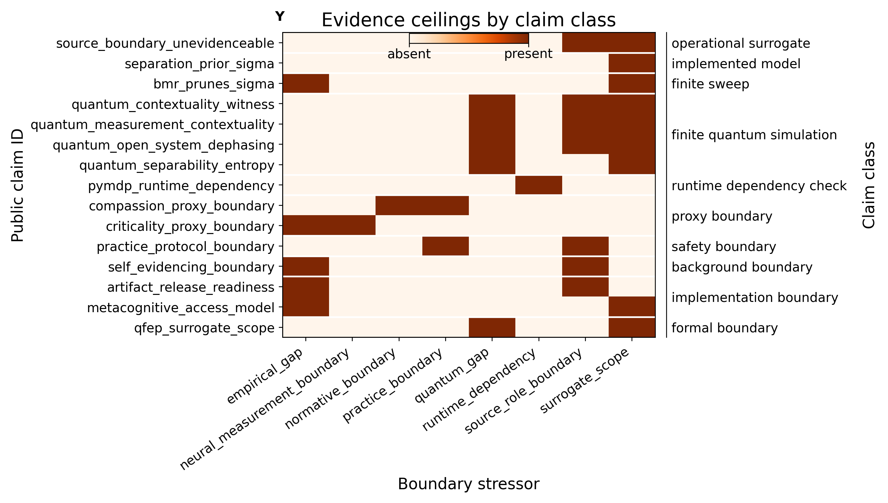
7.8.3 Figure Source Maps and Visual QA
Every figure in the manuscript is generated from JSON or CSV
artifacts under output/data/ or
output/reports/. The source map records figure IDs, paths,
captions, alt text, visual encodings, source artifacts, render
contracts, and renderer-level layout telemetry for text overlaps, title
collisions, cropped free-positioned text, and legend/axis collisions.
The visual-caption audit checks source-map caption length, source
artifacts, boundary phrases, and legend/colorbar explanations; the
rendered-caption audit checks the actual composed manuscript captions
that readers see in the PDF; the accessibility audit checks alt text,
source-data alternatives, non-color encodings, and axis or unit
language; the integrity and legibility audits record hashes, dimensions,
nonblank pixel variance, readable text contracts, and layout failures.
Validation recomputes those fields from disk before accepting the
artifact set, so replacing a PNG or creating an unreadable layout
without regenerating the audit fails.
The visual surface includes a cover graphical abstract, the three ordered QRF lead figures for boundary geometry, b0-b5 relabeling, and invariance/policy flow, finite quantum and stochastic simulation panels, BMR decomposition and pruning maps, active-inference traces, scholarship and claim-governance matrices, and supplemental-only audit visuals. Captions are treated as claim-boundary metadata: simulated figures must say what they simulate, what the colors or legends encode, and which empirical or physical claims remain outside the figure. Supplementary prose lists source-map and validation contracts rather than reprinting numbered main-text figures.
The scholarship and claim-governance visuals audit support and presentation rather than adding model behavior. The scholarship matrix summarizes citation counts by declared source status and track; the claim-support matrix summarizes distinct citation counts by public claim and source status. Individual source and claim-citation bindings remain in the linked JSON artifacts, and counts express contextual coverage rather than strength of evidence. The claim-source-validation graph links claims to source roles and validation gates, and the semantic palette ledger freezes color and hatch meanings across figures. These panels make the manuscript easier to audit, but they are not evidence for no-self, practice efficacy, neural criticality, or physical qFEP realization.
The pymdp runtime dashboard is supplemental for the same
reason: it audits whether the active-inference surface is reproducible,
normalized, and recomputable from saved arrays. Its panels summarize
model normalization, posterior and expected-free-energy residuals,
deterministic replay, runtime dependency diagnostics, and selected
stochastic/null contrasts; they are validation checks for the software
interface, not additional model-behavior evidence and not empirical
data.
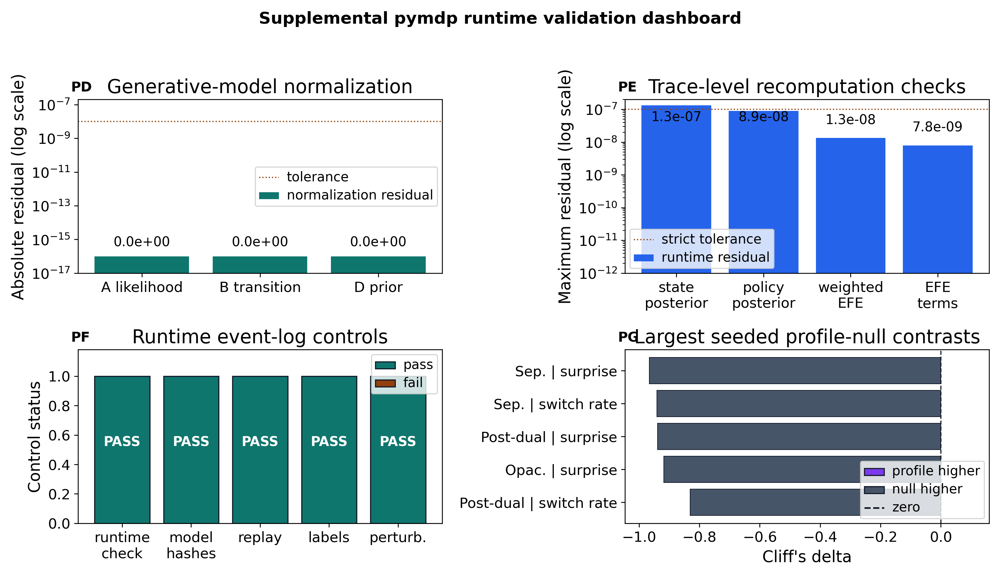
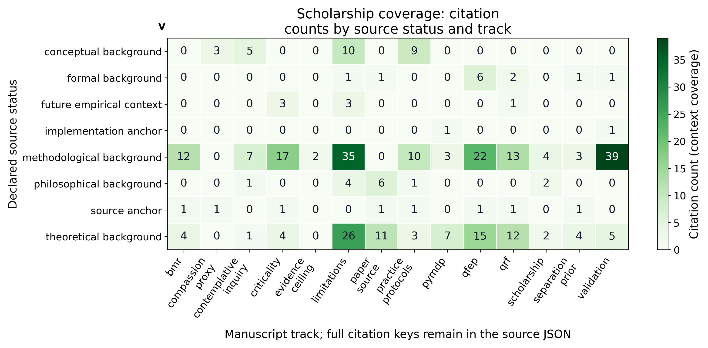
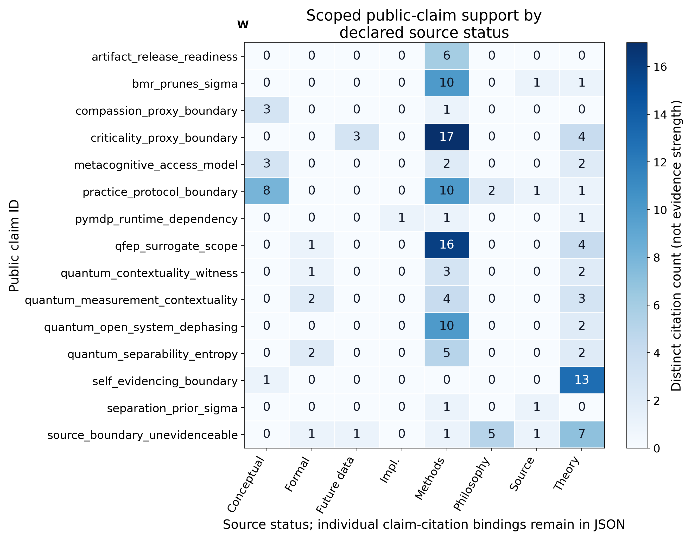
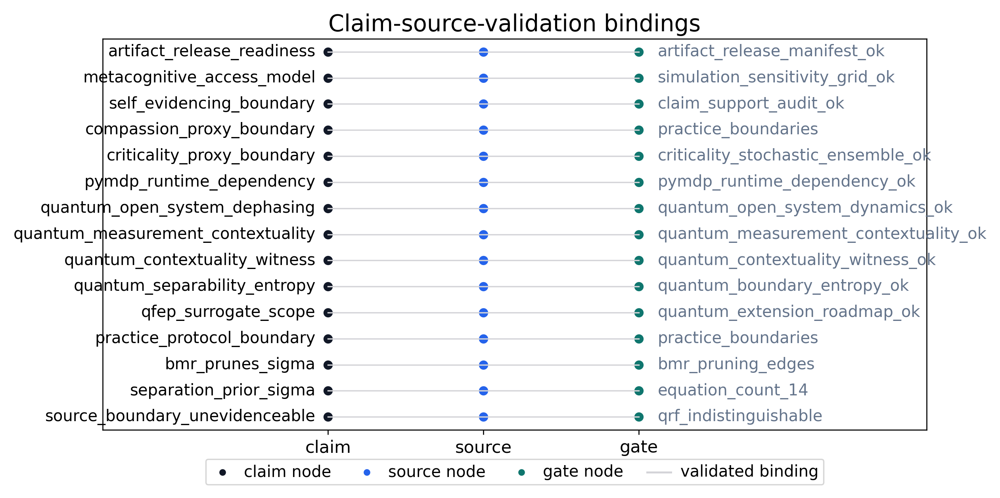
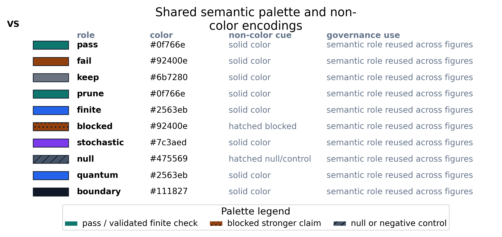
The method assumption/failure map gives the same treatment to the method engines themselves. Rows are method engines; columns record hard constraints, modeling choices, assumptions, evidence ceilings, and falsification controls. The matrix makes soft assumptions visible at the same level as successful checks, which is the FirstPrinciples point of the project: a method is not stronger because its figure is beautiful; it is stronger when its assumptions, failure modes, and forbidden inferences are inspectable.
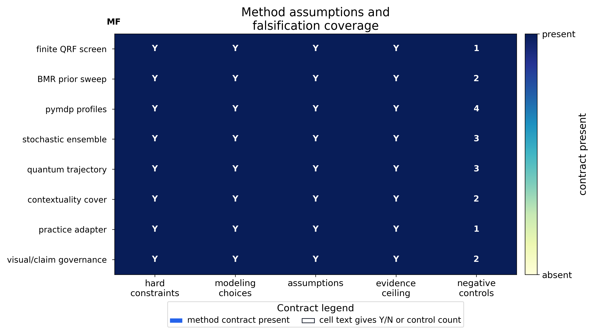
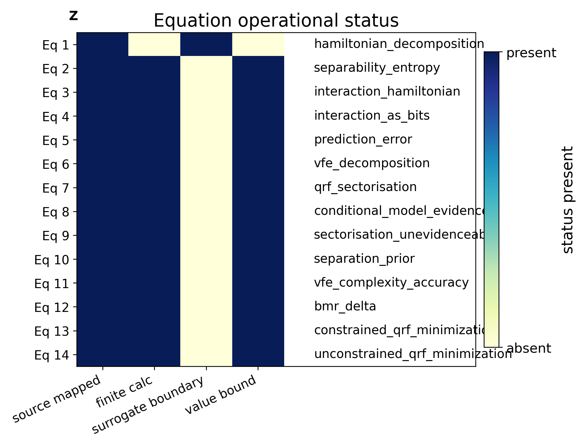
7.8.4 Release, Review Response, and Limits
The local release and review-response artifacts are recorded here because they are reproducibility metadata, not new scientific results. The artifact release manifest hashes manifest-listed outputs and rerun files so stale files are visible. The external review-response audit records implemented local deltas and keeps the public-reproduction item blocked until an external archive, DOI, or independent reproduction exists. The figure parameter ledger gives every figure a traceable source row. The QRF label-ablation audit checks that neutral channel renaming does not create semantic dependence. The independent quantum cross-check repeats CHSH and local-polytope controls. The BMR alternative-prior audit records comparator-family verdicts (Pineau et al. 2020; Talts et al. 2018; Gelman et al. 2020).
These records support reproducible local inspection only. They do not certify a public release, a community reproduction, human-subject validation, clinical safety, contemplative efficacy, neural measurement, or physical qFEP dynamics.
The limits are part of the same release record. The supplemental gates improve reproducibility and adversarial clarity, not evidential scope. They do not:
- instantiate the source paper’s quantum-information dynamics or a physical realization of the quantum free-energy principle;
- settle the no-self-evidence thesis, or evidence it through contemplative observation or neural measurement;
- quantify compassion or well-being, or establish the efficacy of any practice;
- provide clinical outcomes, developmental landmarks, or awakening criteria.
They define the current software boundary within which future visualization, empirical adapters, and practice-interface work can be developed without laundering unsupported claims.